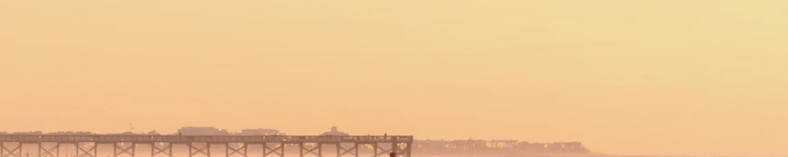

Drawing...
어렸을 때부터 지금까지 이어오고 있는 취미입니다. 위의 INFO, LIKE, HOBBY 버튼 및 LIKE 페이지의 PIKEMON, RABBIT, TRAVEL 버튼 또한 직접 그렸습니다.
과제가 없는 시간이면 항상 풍경화를 그리거나 디자인을 하는데, 취미와 전공 과목을 이렇게라도 접목시킬 수 있게 되어 기쁩니다.
3세대 IPAD PRO 12.9형을 사용합니다.
Piano...
2019년부터 이어오고 있는 취미입니다. 피아노에 대한 흥미는 초등학생 시절부터 많았으나 잦은 이사와 학업으로 인해 마땅히 배울 기회가 있지 않았습나다.
현재는 어렵지 않은 단순한 OST를 연주할 수 있는 수준으로, 아쉽게도 사이트의 BGM을 만들지는 못했습니다.
신디사이저 MODX 8을 사용합니다.
Swimmimg...
초등학생 시절부터 피아노 대신 배우기 시작한 취미입니다. 집 근처에 청소년 수련관이 존재하여 그곳의 수영 강습을 들었습니다.
접영을 배우기 전에 강습을 듣는 것을 그만두었으나, 물에 뜨고 나아갈 줄 압니다.
Korean Traditional Archery...
중학생 시절 수영을 그만두고 배우기 시작한 취미입니다. 전국 국술 대회에 유급자 부문으로 출전하여 은메달을 딴 경험이 있습니다.
활을 쏘는 올바른 자세와 예절을 압니다.